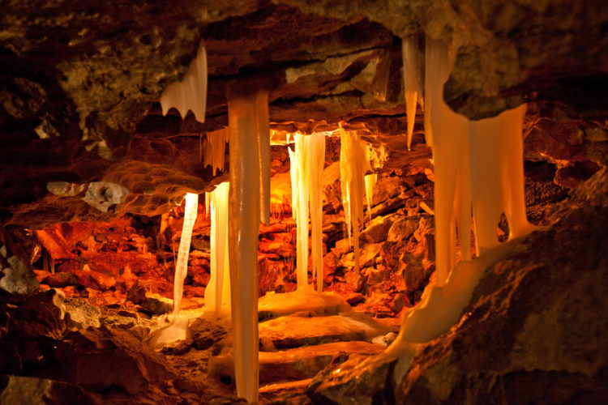

15. Кунгурская пещера (Кунгур, Пермская область)

Заядлые путешественники, ищущие, что посмотреть в России самого необычного и даже мистического, непременно должны спуститься в Кунгурскую пещеру. Она и красива, и велика, и по-настоящему волшебна. Первые туристы, в том числе и цари, спустились сюда еще в XIX веке. Сегодня это место – самое известное уральское чудо. Ежегодно ее посещают до 100,000 людей. Всего за несколько часов, передвигаясь по пещерным лазам, туристы видят и зиму, и осень, и весну. Вот только лета в пещере никогда не бывает. Температура здесь не поднимается выше +5⁰ + 8⁰ C, поэтому даже сами уральцы, решившие на досуге полюбоваться сталактитами, сталагмитами и подземными озерами, частенько дрожат здесь от холода, забыв надеть перед спуском теплую куртку и шапку. Самый красивый, завораживающий своим белоснежным блеском зал пещеры – Бриллиантовый грот, названный так из-за его многолетнего обледенения. Даже если на улице стоит жара +30⁰ С, на стенах грота распускаются снежные цветы. Группам туристов не разрешается здесь находиться более пяти минут. Смотрители пещеры берегут ее микроклимат и защищают от таяния льдов. Протяженность всех ходов пещеры достигает шести километров вместе с полусотней лазеек и гротов, каждый из которых имеет и свое имя, и удивительную историю. Многие залы подсвечиваются разноцветными огнями и выглядят нереальными, фантастическими чертогами.